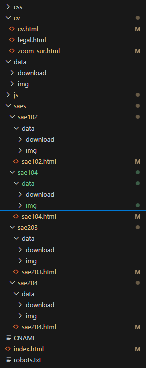
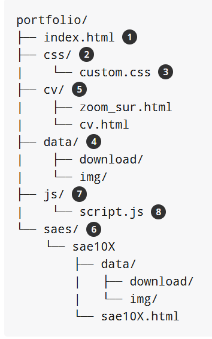

Arborescence du site web réel

Objectifs
- Créer un site Web responsive et moderne
- Présenter un CV et des projets techniques en ligne
- Utiliser Bootstrap pour la mise en page
- Respecter les normes Web et une structure de projet organisée
- Déployer un site Internet sur un serveur distant
- Utiliser GitLab pour le suivi et le versionnement du projet
Auto-réflexion
Durant cette SAE, j’ai conçu et développé les différentes pages principales de mon portfolio Web en mettant en place une navigation responsive adaptée aux ordinateurs comme aux téléphones. J’ai également intégré plusieurs illustrations, pictogrammes et animations afin de rendre l’interface plus moderne et agréable à utiliser.
Ce projet m’a permis de mieux comprendre l’organisation d’un site Web professionnel grâce à une arborescence claire et structurée, ainsi qu’à la personnalisation du design avec mon propre fichier CSS. J’ai aussi appris à déployer un site Internet sur AlwaysData et à utiliser GitLab pour gérer les différentes versions du projet.
Cette SAE m’a beaucoup aidé à progresser en développement Web et à améliorer ma manière de présenter mes réalisations techniques de façon plus professionnelle.
Compétences acquises
- Développement front-end avec HTML, CSS et Bootstrap
- Responsive design sur tous types d’appareils
- Organisation d’un projet Web avec une arborescence claire
- Déploiement d’un site Internet sur un serveur distant avec AlwaysData
- Respect des normes Web (W3C) et bonnes pratiques de développement
- Gestion de versions avec Git
Arborescence du portfolio idéal
